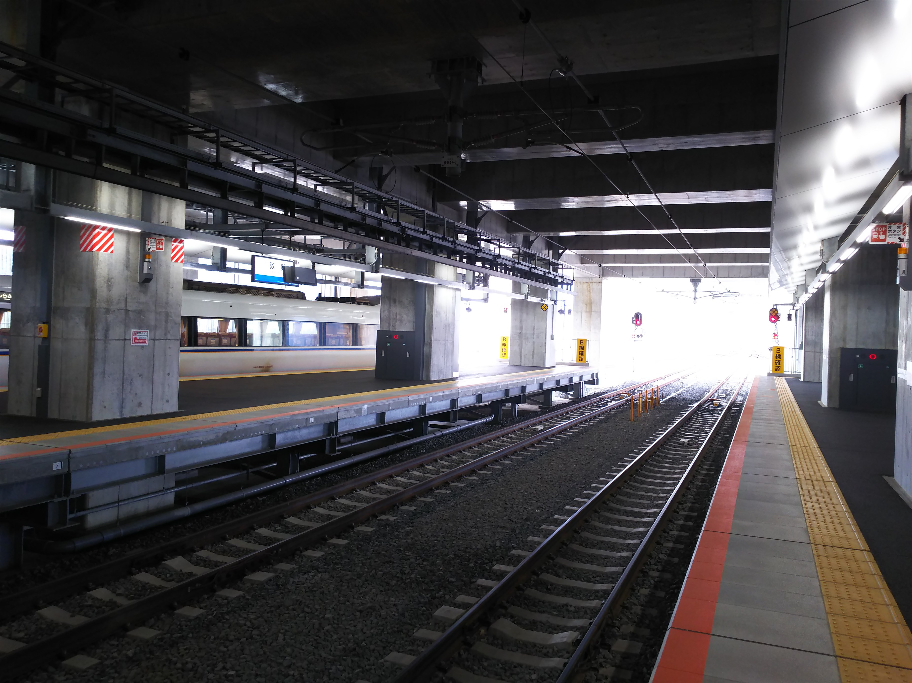

さて、早速未乗区間の北陸新幹線敦賀→金沢に乗車する機会がやってきました！
敦賀止めのサンダーバードも見慣れた光景になりま
したね。
敦賀までは１時間２３分。
いつもならケチケチ作戦で敦賀まで新快速で行くと
ころですが、今回は株主優待券で半額になるので、
豪華？に特急で向かいます。
厳密にいうと、敦賀駅の「新幹線ホーム下連絡線」？も初乗りです。 敦賀駅構内を見下ろして新幹線の下へ。
新幹線の高架下の特急専用ホームに到着。

なるほど。
今回出来た、敦賀駅の新幹線口。な～んにもありま
せん。
真上にある乗換コンコース。思ってたより広いっす。
ホームは終着駅らしく、２面４線あります。
いよいよ初乗り。せっかくなので、サンダーバード
連絡の「つるぎ」ではなく、東京行きの「はくたか」
に乗車します。
自由席があるって、いいっすよね。
で、あっという間に金沢到着。なんか味気ないな。
ちなみに、なにしに行ったかというと、能登町の宇
出津でボランティアしてました。
学生の時に富山から能登線と七尾線に乗りに行った
時に、入場券買った記憶がある街です。
日頃の不徳の致す言動を取り返すべく、徳を積んで
まいりました。
息子に天災の威力を見せたかったんですが、行った
場所はそれほどではなかったですね。とんぼ帰りや
ったので、港が隆起してるところなんかには行けま
せんでした。
もう年齢的にしんどいっす。
このバスで無料で金沢駅からここまで連れてきてく
れました。バスの運ちゃん、ずっと待ってはったん
やろか？
その日のうちに引き上げます。帰りは「かがやき」
初乗車です。これで、新幹線は「なすの」「かもめ」
以外は乗ったことになるんかな。それがどないして
ん、って感じですが。
相変わらず、西九州新幹線は未乗のままですが・・・